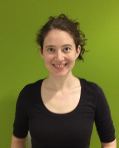
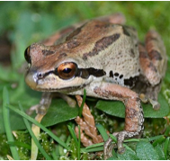

I use quantitative methods and data science techniques to study computer-mediated communication, online communities, and crowdsourcing with a specific focus on understanding how groups solve problems and share knowledge online.
I have been an assistant professor at University of Maryland, College Park's iSchool; a postdoctoral fellow at Carnegie Mellon's Human Computer Interaction Institute; and a PhD student in social and personality psychology at the University of Texas at Austin.
Selected Publications - Knowledge sharing online
Tausczik, Y. R. & Cupani, J. (2018). How Collaborative Filtering Shapes Discussion on Reddit. Working Paper, PDF
Tausczik, Y. R. & Huang, X. (2020). Knowledge Generation and Sharing in Online Communities: Current Trends and Future Directions. Current Opinion in Psychology, 60-64. PDF
Tausczik, Y. R. & Huang, X. (2019). The Impact of Group Size on the Discovery of Hidden Profiles in Online Discussion Groups. Transactions on Social Computing, 2,
10:1-25. PDF
Tausczik, Y. R. & Boons, M. (2018). Distributed Knowledge in Crowds: Crowd Performance on Hidden Profile Tasks. Proceedings of International Conference on Web and Social Media (ICWSM), 405-414. PDF
Tausczik, Y. R. & Wang, P. (2017). To Share or Not to Share? Community-Level Collaboration in Open Innovation Contests. Proceedings of the ACM: Human-Computer Interaction (CSCW), 1,
100: 1-23. PDF
Tausczik, Y. R., Wang, P., & Choi, J (2017). Which Size Matters? Effects of Crowd Size on Solution Quality in Big Data Q&A Communities. Proceedings of International Conference on Web and Social Media (ICWSM), 260-269. PDF
Tausczik, Y. R. (2016). Citation and Attribution in Open Science: A Case Study. Proceedings of Computer Supported Cooperative Work (CSCW), 1524-1534 . PDF
Tausczik, Y. R., Kittur, A., & Kraut, R. E. (2014). Collaborative problem solving: A study of MathOverflow. Proceedings of Computer Supported Cooperative Work (CSCW), 355-367. PDF
Tausczik, Y. R., & Pennebaker, J. W. (2012). Participation in an online mathematics community: Differentiating motivations to add. Proceedings of Computer-Supported Cooperative Work (CSCW), 207-216. PDF
Tausczik, Y. R., & Pennebaker, J. W. (2011). Predicting the perceived quality of online mathematics contributions from users' reputations. Proceedings of Human Factors in Computing Systems (CHI), 1885-1888. PDF
Selected Publications - Online communities
Choi, J. & Tausczik, Y. R. (2017). Characteristics of collaboration in the emerging practice of open data analysis. Proceedings of Computer Supported Cooperative Work (CSCW), 835-846. PDF
Tausczik, Y. R., Dabbish, L., & Kraut, R. E. (2014). Attachment to work groups increases loyalty in an online work environment: Exploring bond- versus identity-based pathways to attachment formation. Proceedings of Computer Supported Cooperative Work (CSCW), 146-157. PDF
Choi, J. &Tausczik, Y. R. (2018). Will Too Many Editors Spoil The Tag?: Conflicts and Alignment in Q&A Categories. Proceedings of the ACM: Human-Computer Interaction (CSCW), 2,
38:1-19. PDF
Selected Publications - Computer-mediated communication
Tausczik, Y. R., Chung, C. K., & Pennebaker, J. W. (2016). Tracking secret-keeping in emails. Proceedings of International Conference on Web and Social Media (ICWSM), 388-397. PDF
Tausczik, Y. R., & Pennebaker, J. W. (2013). Improving teamwork using real-time language feedback. Proceedings of Human Factors in Computing Systems (CHI), 459-468. PDF
Selected Publications - Innovations in methods
Tausczik, Y. R., Faase, K., Pennebaker, J. W., & Petrie, K. J. (2012). Public anxiety and information seeking following H1N1 outbreak: Weblogs, newspaper articles and Wikipedia visits. Health Communication, 197-185 PDF
Tausczik, Y. R., & Pennebaker, J. W. (2010). The psychological meaning of words: LIWC and computerized text analysis methods. Journal of Language and Social Psychology, 24-54. PDF
Scholand, A. J., Tausczik, Y. R., & Pennebaker, J. W. (2010). Social language network analysis. Proceedings of Computer-Supported Cooperative Work (CSCW), 23-26. PDF
For full list of publications see my Google Scholar profile.
About my name

You might be wondering about the origin of either my first or last name. My last name is Hungarian although it often appears in different incarnations with different spellings. My first name is from the genus of the tree frog native to my hometown, Davis, California, the Pacific Tree Frog, Hyla regilla (minus the first letter!). Since I was born the tree frog has been reclassified into a different genus. It is now called Pseudacris regilla.
Yla is essentially the name Ayla, a common Turkish name, that gained popularity in the US (397th most common female name) in two surges around 1986 and 2005. See Wolfram Alpha. It is likely that the two increases were due to the release of The Clan of the Cave Bear movie in 1986 starring the protagonist Ayla and the appearance of Ayla Brown on American Idol in 2005 (who was born during the first surge in 1988).